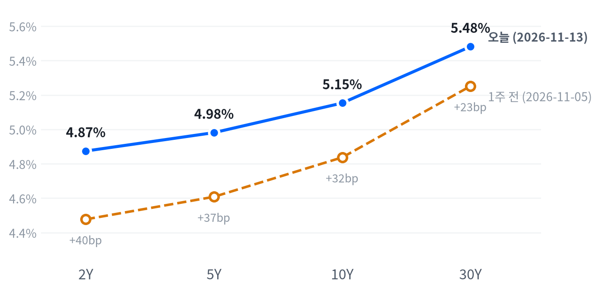

전날 엔비디아의 대안으로 올랐던 AMD가 8.75% 내리는 등 반도체·AI 하드웨어 매도가 업종 전체로 번져 나스닥은 0.91% 내렸다. 필수소비재·커뮤니케이션서비스를 비롯한 7개 업종이 올라 S&P 500은 0.40% 하락에 그쳤고 다우는 소폭 올랐다.
10월 생산자물가가 예상을 밑돌았지만 12월 인상 전망은 흔들리지 않았고, 2년물보다 10년물이 더 올라 2s10s가 27.9bp로 가팔라졌다. 이 스티프닝이 장기물 쪽 압력인지는 11월 20일 국채 종가에서, 엔비디아 할인이 이어지는지는 11월 16일 종가에서 확인한다.
엔비디아 CEO 사임 이튿날인 11월 13일, 매도는 엔비디아 한 종목에서 반도체·AI 하드웨어 전반으로 번졌다. 전날 엔비디아의 대안으로 올랐던 AMD가 8.75% 내렸고 브로드컴·마벨·델·시스코도 함께 밀렸다. HSBC는 새 CEO가 정해질 때까지 엔비디아가 고전할 것이라며 목표가를 170달러로 낮췄고, 수출 금지 엔비디아 칩이 든 델 서버가 상하이 데이터센터에서 확인됐다는 보도가 나왔다. 같은 날 아침 나온 10월 생산자물가는 예상을 밑돌았지만, 국채금리는 장기물을 중심으로 올랐다.
전날에는 할인이 엔비디아 한 종목의 지배구조 위험에 붙어 있다고 봤는데, 경쟁사가 더 크게 내린 이날 움직임은 그 해석을 약하게 한다. 엔비디아가 투자한 마벨·코히어런트까지 함께 내린 점은, 엔비디아가 생태계 기업에 대 오던 투자와 신용 지원이 새 경영진 아래 줄어들 수 있다는 우려와 들어맞는다. 가장 강한 반론은 한 주 동안 급등한 AMD·브로드컴의 차익 실현이라는 설명이고, 하루 종가만으로는 두 설명을 구분하기 어렵다. 금리는 결이 다르다. 생산자물가 헤드라인은 낮았지만 식품·에너지·무역서비스를 뺀 지수가 두 달째 0.5% 올랐고, CME FedWatch 기준 12월 인상 확률은 89%대로 오히려 올랐다는 보도가 나왔다. 12월 인상이 거의 가격에 들어가 2년물은 거의 움직이지 않았고, 장기물은 이번 주 약했던 입찰과 실질금리 상승을 따라 더 올랐다고 본다. 커브를 두고 시장이 가격에 넣은 기대는 확보하지 못해 이 해석이 이미 가격에 들어 있는지는 모른다.
반도체·AI 하드웨어 업종의 3개월 상대수익률은 한 주 전보다 더 나빠졌고, 엔비디아 한 종목과 업종을 나눠 볼 근거는 하루 만에 약해졌다. 다음 주 엔비디아 실적이 투자·신용 지원 축소 우려를 확인하거나 덜어 줄 첫 재료라, 그 전에는 이 업종에서 새 아이디어를 내지 않는다. 금리는 1주일짜리 관찰이다. 2년 대비 10년 스티프닝을 직접 담는 수단은 국채 선물 커브 거래지만, 해외주식과 원화 단기채로 짜인 펀드에서 그 접근과 증거금·롤 비용은 확인되지 않은 입력이다. 주식에서는 장기금리 상승이 소프트웨어·전력망처럼 먼 현금흐름에 기대는 테마의 할인율 부담을 키우고, 커브가 가팔라지면 금융 업종의 순이자마진에는 우호적이라는 점까지만 연결한다. 금융 업종은 이날 0.81% 올랐다.
커브 판단은 11월 13일 국채 종가 기준 2s10s 27.9bp 대비 11월 20일 종가의 2s10s 변화가 +5.07bp 이상이면 뒷받침되고, -5.07bp 이하이면 약해지며 1월 인상 반영에 따른 앞단 주도 평탄화를 우선 설명으로 본다. 그 사이면 결론을 내지 않는다. 방향이 맞아도 같은 기간 10년물 금리가 내렸다면 장기물 압력이 아니라 경기 둔화·위험회피 쪽 움직임으로 보고 원인은 판단하지 않는다. 엔비디아 판단은 11월 9일 종가 대비 11월 16일 종가에서 엔비디아가 S&P 500보다 3.89%p 이상 뒤처져 있는지로 결론을 낸다.
| 지수 | 종가 | 등락 | 기준일 |
|---|---|---|---|
| 닛케이225 | 60,819.36 | -0.70% | 11월 12일 |
| 항셍 | 24,008.55 | -1.26% | 11월 12일 |
| 상해종합 | 3,655.83 | -0.67% | 11월 12일 |
| DAX | 26,771.88 | +0.41% | 11월 12일 |
| FTSE100 | 10,902.56 | +0.36% | 11월 13일 |
| 유로스톡스50 | 6,398.98 | +0.09% | 11월 12일 |
| VIX | 19.30 | +0.60p | 11월 13일 |
아시아 세 지수와 DAX·유로스톡스50은 들어온 마지막 종가인 11월 12일 값이고, FTSE100과 VIX는 11월 13일 값이다. VIX 등락은 포인트다.
유럽은 미국과 엇갈렸고, 아시아는 미국과 같은 쪽으로 내렸다. 들어온 마지막 종가로 유럽 세 지수는 평균 0.29% 올랐지만 미국은 내렸다. 아시아 세 지수는 평균 0.88% 내려 미국의 약세를 먼저 보였고, 항셍이 1.26%로 가장 크게 내렸다. 유럽에서 11월 13일 종가가 들어온 것은 FTSE100뿐이다.
밤사이 S&P 선물(ES)은 03:30(ET) 저점 7,599에서 08:30(ET) 고점 7,669까지 0.93% 범위를 움직였고, 고점은 생산자물가 발표 시각과 겹친다. 나스닥 선물(NQ)은 전날 18:30(ET) 고점에서 03:30(ET) 저점까지 1.29% 범위였다. 예상보다 낮은 생산자물가를 받아 현물은 S&P +0.32%, 나스닥 +0.17%, 러셀2000 +0.24%의 갭으로 상승 출발했다.
평균적인 종목은 지수보다 나았다. 동일가중 S&P에서 시총가중 지수를 뺀 수익률 차이가 +0.56%p로, 참여도는 소수가 끌어내림 쪽이었다. 몇몇 대형 기술주가 지수를 끌어내렸다는 뜻이다. S&P 500·나스닥·러셀2000은 모두 하루 범위의 중간에서 끝났다.
중간 마감의 경계는 최근 2,259거래일의 일간 종가 위치 이력으로 다시 잰 기준이다.
반도체 매도가 주식을, 생산자물가에도 흔들리지 않은 12월 인상 전망이 장기금리를 움직인 날이다. 지수는 개장가가 그날의 고점이었고 반도체 매도가 깊어진 오전에 저점을 찍었으며, 반도체 낙폭이 줄어든 오후에 하루 범위의 중간으로 돌아왔다. 두 움직임은 시각이 겹친다. 업종에서는 기술만 크게 내리고 필수소비재·커뮤니케이션서비스·에너지·금융이 올라, 반도체에서 빠진 자리를 방어·가치 업종이 채웠다. 순유입 자료가 없어 실제 자금 이동인지는 업종 등락으로만 보인다. 정규장 뒤 지수를 움직일 재료는 확인되지 않았다.
| 지수 | 종가 | 등락률 |
|---|---|---|
| S&P500 가치주 | 242.16 | +0.20% |
| 다우존스 | 52,347.55 | +0.10% |
| 러셀2000 | 2,790.49 | -0.31% |
| S&P500 | 7,561.67 | -0.40% |
| 나스닥 | 25,136.27 | -0.91% |
| S&P500 성장주 | 132.60 | -0.91% |
| 섹터 | 등락률 |
|---|---|
| 필수소비재 | +1.42% |
| 커뮤니케이션서비스 | +1.05% |
| 에너지 | +0.98% |
| 금융 | +0.81% |
| 헬스케어 | +0.54% |
| 유틸리티 | +0.52% |
| 부동산 | +0.02% |
| 소재 | -0.21% |
| 산업재 | -0.39% |
| 경기소비재 | -0.40% |
| 기술 | -2.01% |
주식 손실은 지수보다 기술 업종에 몰렸다. S&P 500은 0.40% 내린 7,562로 평소 하루 움직임의 절반에도 못 미쳤고, 나스닥은 0.91% 내린 25,136으로 여느 날만큼 움직였으며, 다우는 0.10% 오른 52,348로 끝났다. 기술 업종이 2.01% 내리는 동안 11개 업종 가운데 7개가 올랐다.
S&P 500과 나스닥은 개장가가 그날의 고점이었다. S&P는 10:00(ET) 무렵 7,499까지 시가보다 1.54% 밀렸고, 나스닥은 11:00(ET) 무렵 24,873까지 2.11% 밀렸다. 엔비디아도 같은 시각 158.39달러까지 시가보다 6.77% 내렸다가 162.85달러로 끝났다. 필라델피아 반도체지수가 오전에 낙폭을 키웠다가 줄였다는 보도가 나왔고, S&P도 그 뒤 시가 이후 낙폭의 절반쯤을 되찾았다.
지수 하락은 거의 전부 기술 업종이 만들었다. 추정 기여도로 기술이 -0.67%p였고, 경기소비재 -0.05%p, 산업재 -0.02%p가 보탰다. 반대로 커뮤니케이션서비스가 +0.13%p, 금융이 +0.08%p, 헬스케어와 필수소비재가 각각 +0.05%p, 에너지가 +0.03%p, 유틸리티가 +0.02%p로 낙폭을 줄였다. 업종 합으로 설명되지 않는 부분은 -0.01%p다.
추정 기여도는 업종 비중을 직접 받지 않아, 최근 252거래일 지수·업종 수익률로 추정한 비중을 곱한 값이다. 소재와 부동산은 비중을 추정할 수 없어 빠졌다. 등락폭은 최근 60거래일 평균 하루 변동 대비 S&P 0.43배, 나스닥 0.69배, 러셀2000 0.27배다.
이 하락을 시장 전체의 위험회피로 보기는 어렵다. 가치주가 0.20% 오르는 동안 성장주가 0.91% 내려 스타일 차이가 하루 손실을 설명하고, 러셀2000은 S&P보다 덜 내렸다. 전날에는 반도체 안의 순환이 기술 업종 낙폭을 메웠지만, 이날은 그 순환이 업종 전체의 매도로 바뀌었다.
| 만기 | 종가 | 전일比(bp) | 1주 전 | 주간 변화(bp) |
|---|---|---|---|---|
| 2Y | 4.874% | +1.0 | 4.477% | +39.7 |
| 5Y | 4.981% | +3.6 | 4.608% | +37.3 |
| 10Y | 5.153% | +5.0 | 4.837% | +31.6 |
| 30Y | 5.481% | +4.8 | 5.251% | +23.0 |
장기물이 금리 상승을 이끌었다. 10년물은 5.0bp 오른 5.153%, 30년물은 4.8bp 오른 5.481%로 끝났고, 10년물은 최근 2년(504거래일) 가운데 이보다 높았던 날이 15일뿐, 30년물은 14일뿐이다. 2년물은 1.0bp 오른 4.874%로 거의 움직이지 않았다.

커브 차트의 「오늘」은 11월 13일 종가, 「1주 전」은 11월 5일 종가다. 1주 전보다 2년물은 39.7bp, 10년물은 31.6bp, 30년물은 23.0bp 높다.
한 주 동안은 2년물이 30년물보다 더 올라 베어 플래트닝이었는데, 이날 하루는 10년물이 2년물보다 4.0bp 더 올라 베어 스티프닝이다. 2s10s는 27.9bp, 5s30s는 50.0bp로 벌어졌다. 고용보고서 뒤 한 주 넘게 앞단이 끌던 커브가 생산자물가 날에 처음 장기물 쪽으로 기울었다.
금리를 움직인 재료는 생산자물가에도 꺾이지 않은 12월 인상 전망이다. 헤드라인은 예상을 밑돌았지만 기조 물가가 식지 않아 인상 기대가 유지됐고, 10년물은 장중 5.174%까지 올랐다는 보도가 나왔다. 12월 인상이 거의 가격에 들어간 앞단은 덜 움직였고, 장기물에는 이번 주 두 입찰의 얇은 응찰이 남아 있었다. 10년물 입찰(11월 10일)의 응찰배율은 2.46배로 직전 6회 평균 2.60배보다, 30년물 입찰(11월 12일)은 2.36배로 평균 2.44배보다 낮았다.
명목금리를 실질금리와 기대인플레로 나눈 최신 자료(11월 12일)에서 10년물 12bp 상승은 실질금리 8bp와 기대인플레 4bp로 이뤄져 실질금리가 이끌었다. 5거래일로 넓히면 10년물 20bp 상승 가운데 실질금리가 22bp, 기대인플레가 -2bp로, 이번 주 장기금리 상승은 물가 보상이 아니라 실질금리에서 나왔다. 기대인플레에는 위험·유동성 프리미엄도 섞여 있다. 11월 13일 10년 기대인플레는 2.24%로 보합이었고, 같은 날 실질금리가 나오면 이날 상승분의 내역이 확인된다. 하이일드 스프레드는 11월 12일 3.20%로 10bp 좁혀져, 신용시장은 국채 매도와 함께 흔들리지 않았다.
5년 뒤 5년 명목금리 5.25%, 실질 3.08%(11월 12일 기준). 기대인플레 쪽 수치와의 교차검증은 할 수 없었고, 위험 프리미엄이 섞인 값이다.
출처: CNBC
| 통화쌍 | 종가 | 등락률 | 기준일 |
|---|---|---|---|
| DXY | 103.411 | +0.24% | 11월 13일 |
| USD/KRW | 1,334.97 | +0.01% | 11월 13일 |
| USD/JPY | 159.788 | -0.06% | 11월 13일 |
| EUR/USD | 1.1027 | -0.31% | 11월 13일 |
달러는 미국 장기금리를 따라 소폭 올랐다. 달러지수는 0.24% 오른 103.411로 여느 날만큼 움직였고, 유로/달러는 0.31% 내린 1.1027이다. 달러/엔은 159.788엔으로 거의 움직이지 않았지만 최근 2년(504거래일) 가운데 이보다 높았던 날이 50일뿐인 레벨이고, 원/달러는 1,334.97원으로 같은 기간 이보다 낮았던 날이 11일뿐이다.
달러를 받친 것은 생산자물가에도 흔들리지 않은 미국 정책금리 경로라고 본다. 12월 인상 확률이 오르고 장기금리가 오른 날 유로가 약해졌고, 주식이 오전에 크게 밀린 시간에도 달러가 안전자산 수요로 급등하지는 않았다. 엔은 미국 금리가 오른 날에도 약해지지 않았다. 달러/엔은 새벽 160.19엔까지 올랐다가 오후 159.51엔까지 내린 뒤 일부 되돌려 160엔 위에 머물지 못했다. 상대국 금리를 함께 재지 않아 금리차가 얼마나 움직였는지와 엔이 버틴 이유는 확인되지 않았다.
환율은 뉴욕 16:00 ET 가격, 전 거래일 같은 시각 대비다. 결제가와 다를 수 있다. 등락폭은 최근 60거래일 평균 하루 변동 대비 달러지수 0.76배다.
| 품목 | 종가 | 등락률 |
|---|---|---|
| WTI | $88.93 | -0.01% |
| Brent | $96.13 | +0.04% |
| 천연가스 | $3.238 | -3.02% |
| 금 | $3,881.50 | +0.05% |
유가와 금은 거의 제자리였다. WTI는 0.01% 내린 88.93달러, 브렌트는 0.04% 오른 96.13달러, 금은 0.05% 오른 3,881.50달러로 끝나 평소 하루 움직임에 크게 못 미쳤다. 천연가스만 3.02% 내린 3.238달러다.
금은 장중에 주식과 같이 흔들렸다. 자정 무렵 3,924달러 근처 고점 뒤 밀려 11:00(ET) 무렵 3,871달러까지 시가보다 1.2% 내렸고, 주식 낙폭이 줄어든 오후에 되돌렸다. 장기 실질금리 상승이 이어진 날에도 금은 추가로 밀리지 않았다.
유가는 전날 반등 뒤 더 오르지 못했다. 국제에너지기구(IEA)는 10월 세계 석유 공급이 하루 230만 배럴 늘어 분쟁 뒤 처음 공급 과잉으로 돌아섰다고 밝혔고, 미국의 이란 공습 재개 전망이 약해지며 유가가 2주 연속 내렸다는 보도가 나왔다. WTI는 09:30(ET) 무렵 89.64달러까지 올랐다가 밀려 시가 위에서 끝났다. 브렌트와 WTI의 가격 차는 7.20달러로 전 거래일 7.15달러와 비슷했고, 표의 WTI는 12월물, 브렌트는 1월물이라 가격 차에는 만기 차이도 들어 있다. 천연가스 하락의 재료는 확인되지 않았다.
원자재·환율은 뉴욕 16:00 ET 가격, 전 거래일 같은 시각 대비다. 결제가와 다를 수 있다.
출처: CNBC
엔비디아(-2.01%), 브로드컴(-4.76%), AMD(-8.75%)는 반도체·AI 하드웨어 관련주의 약세를 키운 종목이다. 전날 엔비디아 대신 경쟁사로 옮겨 갔던 매수가 하루 만에 되돌려졌고, 한 주 동안 AMD는 30%, 브로드컴은 24% 오르고 엔비디아는 11% 내렸다는 집계가 나왔다. HSBC는 엔비디아 투자의견을 보유로, 목표가를 365달러에서 170달러로 낮추며 새 CEO가 정해질 때까지 주가가 고전할 것으로 봤고, DA 데이비슨도 목표가를 300달러에서 200달러로 내렸다. 임시 CEO가 대규모 생태계 투자를 지원할 의지가 약할 수 있다는 관측도 보도됐다. 시장 일각에서는 엔비디아가 기존 약정은 이행하겠지만 과거처럼 대규모 다자간 투자를 새로 협상하기는 어려워질 것이라는 골드만삭스의 분석과 함께, 엔비디아 2031년 만기 채권 수익률이 한 주 사이 5.77%로 올랐다는 의견도 나왔다.
메타(+2.90%)는 커뮤니케이션서비스 업종과 함께 지수 낙폭을 줄였지만, 확인된 재료는 없다.
애플(+0.39%)은 소폭 올랐고, 확인된 재료는 없다.
샌디스크(-5.59%), 델(-7.18%), 웨스턴디지털(-5.00%)은 AI 서버·스토리지 관련주의 약세를 키웠다. 수출 금지 엔비디아 칩(H800)이 든 델 서버가 앨리스 황과 연관된 상하이 데이터센터에서 확인됐다는 보도가 나왔고, 그 기록이 고의적인 위반을 입증하지는 않는다는 점도 함께 전해졌다. 의회가 이 사안을 국가안보 문제로 조사하고 있다는 보도도 나왔다. 시장 일각에서는 베선트 재무장관이 첨단 칩 유출을 매우 실망스럽다고 밝히며 엔비디아가 칩이 어디로 가는지 통제할 능력이 있었는지에 의문을 제기했다는 의견도 있었다. 샌디스크와 웨스턴디지털에는 엔비디아발 반도체 매도와 메모리 가격 우려가 겹쳤다는 보도가 나왔다.
시스코(-6.24%)는 통신장비 쪽에서 AI 하드웨어 약세를 더했다. 11월 12일 장 마감 뒤 발표한 2027 회계연도 1분기 실적에서 매출은 185억 달러로 24% 늘어 사상 최대였지만, 비GAAP 매출총이익률이 65.6%로 1년 전보다 250bp 낮아졌다. 회사는 하드웨어 비중 확대와 메모리 비용을 이유로 들었고, 이 마진 압박이 매도 이유로 보도됐다.
출처: CNBC, Benzinga, Investing.com, MarketBeat, 블룸버그, Seeking Alpha, Motley Fool, Invezz, 24/7 Wall St.
10월 생산자물가가 새로 나왔지만 미국 경기 국면은 성장 보합·물가 재가속인 비용압박을 4일째 유지한다. 생산자물가가 물가 점수를 0.451에서 0.647로 올려 재가속 판단을 더 굳혔고, 성장 점수 0.065는 보합 범위 안이다. 점수가 현재 국면을 가리키는 데다 마지막 변경(11월 10일) 뒤 5영업일도 지나지 않았다. 다음 자료는 11월 17일 소매판매·산업생산이다.
고용축은 개선을 유지하고 새 발표는 없다. 일곱 중 다섯이 개선이다. 고용축 +0.564
| 지표 | Actual | Forecast | Previous | 발표일 | 컨센 대비 | 직전 대비 | 추세 |
|---|---|---|---|---|---|---|---|
| 구인건수(9월) | 7,523K | — | 7,190K | 2026-09 기준월 | 개선 | 보합 · 3개월 평균 7,435K → 7,349K | |
| 신규 실업수당 청구 | 200,000 | — | 191,000 | 2026-11-12 (11월 7일 주간) | 악화 | 개선(미미) · 4주 평균 199K → 195K | |
| 신규 청구 4주 평균 | 195,250 | — | 195,250 | 2026-11-12 (11월 7일 주간) | 보합 | 개선(미미) · 4주 평균 200K → 196K | |
| 계속 실업수당 청구 | 1,697,000 | — | 1,717,000 | 2026-11-12 (10월 31일 주간) | 개선 | 보합 · 4주 평균 1,707K → 1,708K | |
| 비농업 고용 변화(10월) | +165K | — | +60K | 2026-11-06 | 개선 | 개선(뚜렷) · 3개월 평균 +28K → +137K | |
| 실업률(10월) | 4.1% | — | 4.2% | 2026-11-06 | 개선 | 개선(미미) · 3개월 평균 4.20% → 4.13% | |
| 평균시간당임금 MoM(10월) | +0.37% | — | +0.26% | 2026-11-06 | 개선 | 개선(뚜렷) · 3개월 평균 +0.20% → +0.32% |
생산·활동축은 악화를 유지하고 새 발표는 없다. 아홉 중 다섯이 악화다. 생산·활동축 -0.618
| 지표 | Actual | Forecast | Previous | 발표일 | 컨센 대비 | 직전 대비 | 추세 |
|---|---|---|---|---|---|---|---|
| 산업생산 MoM(9월) | +0.66% | — | +0.06% | 2026-09 기준월 | 개선 | 보합 · 3개월 평균 +0.40% → +0.32% | |
| 내구재주문 MoM(9월) | +1.91% | — | +0.14% | 2026-09 기준월 | 개선 | 악화(미미) · 3개월 평균 +1.70% → +0.98% | |
| 공장주문 MoM(9월) | +1.84% | — | +0.33% | 2026-09 기준월 | 개선 | 악화(미미) · 3개월 평균 +1.35% → +0.98% | |
| 건설지출 MoM(9월) | -1.85% | — | +1.98% | 2026-09 기준월 | 악화 | 개선(미미) · 3개월 평균 -0.18% → -0.01% | |
| 주택착공(9월) | 1,221K | — | 1,288K | 2026-09 기준월 | 악화 | 악화(완만) · 3개월 평균 1,345K → 1,293K | |
| 신규주택판매(9월) | 676K | — | 680K | 2026-09 기준월 | 악화 | 개선(미미) · 3개월 평균 652K → 668K | |
| 기존주택판매(10월) | 375만 | — | 397만 | 2026-11-12 | 악화 | 악화(뚜렷) · 3개월 평균 4,127K → 3,883K | |
| 무역수지(9월) | -$105.05B | — | -$105.74B | 2026-09 기준월 | 개선 | 악화(뚜렷) · 3개월 평균 -66.6 → -101.2 | |
| 실질GDP QoQ 연율(3분기) | +3.4% | — | +2.2% | 2026년 3분기 | 개선 | — | |
| 필라델피아 연은 제조업지수(10월) | 20.9 | — | 37.8 | 2026-10 기준월 | 악화 | 개선(뚜렷) · 3개월 평균 17.1 → 35.4 |
소비축은 보합이고 새 발표는 없다. 둘 중 하나가 개선, 하나는 보합이다. 소비축 +0.249
| 지표 | Actual | Forecast | Previous | 발표일 | 컨센 대비 | 직전 대비 | 추세 |
|---|---|---|---|---|---|---|---|
| 소매판매 MoM(9월) | +0.77% | — | +1.29% | 2026-09 기준월 | 악화 | 보합 · 3개월 평균 +0.61% → +0.55% | |
| 미시간대 소비자심리(9월) | 48.1 | — | 51.7 | 2026-09 기준월 | 악화 | 개선(완만) · 3개월 평균 48.0 → 51.7 |
물가축은 재가속이고, 생산자물가가 그 판단을 더 굳혔다. 여섯 중 셋이 재가속, 둘은 교착이며, 근거는 10월 소비자물가 전월비 0.35%와 생산자물가의 석 달 평균 상승폭 확대다. PCE 물가는 9월 기준이라 아직 교착이다. 물가축 +0.647
| 지표 | Actual | Forecast | Previous | 발표일 | 컨센 대비 | 직전 대비 | 추세 |
|---|---|---|---|---|---|---|---|
| PPI 최종수요 MoM(10월) | +0.35% | 0.4% | +1.41% | 2026-11-13 | 하회▼ | 하락 | 재가속(뚜렷) · 3개월 평균 +0.17% → +0.72% |
| CPI MoM(10월) | +0.35% | — | +0.65% | 2026-11-10 | 하락 | 재가속(뚜렷) · 3개월 평균 +0.04% → +0.46% | |
| Core CPI MoM(10월) | +0.30% | — | +0.33% | 2026-11-10 | 하락 | 재가속(뚜렷) · 3개월 평균 +0.14% → +0.31% | |
| PCE 물가 YoY(9월) | 3.65% | — | 3.44% | 2026-09 기준월 | 상승 | 교착 · 3개월 평균 3.62% → 3.49% | |
| Core PCE YoY(9월) | 3.12% | — | 3.03% | 2026-09 기준월 | 상승 | 교착 · 3개월 평균 3.10% → 3.05% | |
| 미시간대 1년 기대인플레(9월) | 4.6% | — | 4.0% | 2026-09 기준월 | 상승 | 둔화(완만) · 3개월 평균 4.70% → 4.27% |
BLS가 발표한 10월 최종수요 생산자물가는 계절조정 전월비 0.3%(지수로 계산하면 0.35%) 올라 컨센서스 0.4%를 밑돌았고, 9월 1.4%보다 상승폭이 줄었다. 비계절조정 12개월 상승률은 6.5%로 예상 6.6%보다 낮았지만, BLS는 2022년 11월(7.4%) 이후 가장 큰 상승이라고 밝혔다. 식품·에너지·무역서비스 제외 지수는 0.5% 올랐다.
BLS는 10월 상승을 재화가 이끌었다고 밝혔다. 최종수요 재화는 0.5% 올랐고 상승분의 60% 넘게가 식품·에너지를 뺀 재화에서 나왔다. 식품은 1.3% 올랐고, 에너지는 0.1% 내렸다. 서비스는 0.2% 올랐는데, BLS는 그 상승의 4분의 3이 운송·창고 서비스의 2.0% 상승에서 나왔고 트럭 화물운송이 3.9% 올랐다고 밝혔다. 무역 마진은 0.2% 내려 헤드라인을 눌렀다. BLS는 6~9월 수치를 늦게 들어온 응답과 응답자 수정을 반영해 고쳤다고 밝혔다.
헤드라인을 낮춘 것은 에너지 보합과 무역 마진 하락이고, 연준이 보는 기조 쪽은 식지 않았다. 식품·에너지·무역서비스를 뺀 지수가 9월과 같은 폭으로 올랐고, 에너지가 내린 달에 식품과 운송·창고 가격은 크게 올랐다. 이를 앞선 에너지 충격이 운송·식품으로 번진 결과로 보는 것은 우리 해석이고, BLS 발표만으로는 그 경로를 확인할 수 없다. 일시적 에너지 충격이라는 설명보다 물가가 여러 품목으로 퍼진다는 설명에 가까운 자료라, 물가축 재가속과 12월 인상 중심 판단을 함께 뒷받침했다.
직전 대비는 Actual을 Previous와 비교한 것이고, 추세는 최근 3개월 평균을 그 앞 3개월 평균과 비교한 것입니다(주간 실업수당 청구는 4주 평균끼리). 추세의 세기는 그 지표가 평소 움직이는 폭에 견준 크기이고, 작은 변화는 보합으로 봅니다. 분기 지표인 GDP는 두 비교가 같은 숫자를 보므로 직전 대비만 싣습니다.
연준의 다음 수는 12월 9일 FOMC의 25bp 인상이라는 판단을 유지한다. CME FedWatch 기준 12월 25bp 인상 확률은 생산자물가 뒤 89.4~89.7%로 보도됐고(전일 85%), 50bp 인상 확률은 10.3%로 내려왔다. 인상 자체는 더 굳었고 큰 폭 인상 기대는 줄었다. BofA와 TD는 12월·1월·3월 연속 인상을 예상했고, 반대쪽에서는 베선트 재무장관이 에너지 충격이 일시적일 수 있다며 인상에 반대했다는 보도가 나왔다.
12월 9일 FOMC 전까지 연준 성명이나 의장 발언이 추가 인상 여지를 닫으면 12월 인상 중심 판단을 철회한다. 10월 생산자물가가 예상을 밑돈 데 이어 11월 17일 10월 소매판매도 예상을 밑돌고, CME FedWatch 12월 인상 확률이 소비자물가 발표 전 보도치(84%) 아래로 내려가면 12월 인상 중심 판단을 수정한다.
채권 방향은 중립에서 비우호로 바꾼다. 30년물이 비우호 기준(5.4%) 위에서 2거래일 연속 마감했고, 생산자물가가 물가 재가속 판단을 굳혀 장기물을 받칠 근거가 약해졌다. 나머지 여섯 자산의 방향은 전일과 같다.
생산자물가 직후의 반응은 짧았다. S&P 선물은 발표 시각에 밤사이 고점을 찍었고, 2년물은 오전 한때 4.85%까지 내렸다가 되돌렸다는 보도가 나왔다. 헤드라인이 컨센서스를 밑돌았는데도 마감에서는 2년물이 소폭 오르고 10년물이 더 올랐다. 시장이 헤드라인보다 기조 물가를 봤다면 나올 모양이지만, 이번 주 장기물 입찰이 약해 기간프리미엄이 붙었다는 설명도 같은 모양을 만들고, 커브 기대를 따로 볼 자료가 없어 마감 가격만으로는 둘을 가리지 못한다.
10월 28일 회의분 FOMC 의사록의 발표일은 확인하지 못했다.
출처: CNBC, StockTitan, FXEmpire, Al Jazeera, CBS
| 지수 | 순위(5거래일 전) | 1개월 | 3개월 | SPY 대비 3개월 | 대비 변화 | 12-1 모멘텀 | 변동성 | 1일 VaR 95% | 베타 | 50/200일선 | 52주 고점 대비 |
|---|---|---|---|---|---|---|---|---|---|---|---|
| 에너지 XLE | 4(4) | -2.4% | +4.4% | +6.5%p | -1.1%p | +51.7% | 24.4% | 2.9% | -0.09 | 위/위 | -7.2% |
| 경기소비재 XLY | 6(8) | +5.8% | +3.0% | +5.1%p | +2.0%p | -3.9% | 19.8% | 1.7% | 0.98 | 위/위 | -3.0% |
| 금융 XLF | 7(7) | +6.2% | +2.3% | +4.4%p | +0.5%p | +4.6% | 16.4% | 1.4% | 0.61 | 위/위 | -0.9% |
| 소프트웨어 IGV | 10(14) | -7.7% | -0.8% | +1.3%p | +2.5%p | -0.2% | 33.8% | 3.5% | 1.35 | 아래/위 | -10.2% |
| 초대형주 Top 50 XLG | 11(13) | -4.3% | -2.7% | -0.6%p | +0.3%p | +7.7% | 17.7% | 1.4% | 1.16 | 아래/위 | -6.1% |
| 주택건설 XHB | 13(10) | +6.6% | -5.1% | -3.0%p | -2.7%p | -8.6% | 28.7% | 2.5% | 0.85 | 위/아래 | -15.1% |
| 은행 KBE | 14(12) | +4.6% | -6.0% | -3.8%p | -3.2%p | +12.2% | 16.8% | 1.4% | 0.45 | 위/위 | -6.8% |
| 소형주 IWM | 16(16) | +0.9% | -8.5% | -6.4%p | -2.5%p | +14.1% | 18.0% | 1.7% | 1.01 | 아래/아래 | -8.8% |
| 산업재 XLI | 17(20) | +0.5% | -9.2% | -7.0%p | -0.1%p | +10.0% | 18.0% | 1.5% | 0.86 | 아래/아래 | -9.3% |
| 소형 성장 IWO | 20(19) | +0.8% | -11.1% | -9.0%p | -2.4%p | +8.2% | 22.8% | 2.2% | 1.29 | 아래/아래 | -11.3% |
| 방산 ITA | 21(23) | +3.7% | -14.5% | -12.4%p | +0.5%p | -1.1% | 21.6% | 2.1% | 0.76 | 위/아래 | -15.2% |
| 전력망 GRID | 22(21) | -6.9% | -15.1% | -13.0%p | -1.1%p | +11.1% | 29.6% | 3.5% | 1.42 | 아래/아래 | -19.3% |
| 모멘텀 팩터 MTUM | 23(22) | -9.8% | -15.4% | -13.3%p | -1.1%p | +20.7% | 32.1% | 3.2% | 1.73 | 아래/아래 | -21.1% |
| 반도체·AI 하드웨어 SMH | 24(24) | -12.9% | -18.1% | -15.9%p | -2.1%p | +57.7% | 46.6% | 4.8% | 2.42 | 아래/아래 | -27.2% |
| 금속·광업 XME | 25(25) | -7.5% | -20.6% | -18.4%p | -2.6%p | +5.5% | 35.4% | 3.7% | 1.57 | 아래/아래 | -29.3% |
| 지수 | 순위(5거래일 전) | 1개월 | 3개월 | SPY 대비 3개월 | 대비 변화 | 12-1 모멘텀 | 변동성 | 1일 VaR 95% | 베타 | 50/200일선 | 52주 고점 대비 |
|---|---|---|---|---|---|---|---|---|---|---|---|
| 헬스케어 XLV | 1(1) | +6.6% | +13.5% | +15.6%p | +0.8%p | +17.9% | 17.4% | 1.4% | 0.42 | 위/위 | -0.4% |
| 필수소비재 XLP | 2(2) | +6.5% | +9.8% | +11.9%p | +0.5%p | +15.2% | 17.9% | 1.4% | -0.02 | 위/위 | 0.0% |
| 배당 SCHD | 3(3) | +5.9% | +6.2% | +8.3%p | 0.0%p | +29.8% | 12.7% | 1.0% | 0.28 | 위/위 | -0.2% |
| 저변동성 SPLV | 5(5) | +6.6% | +4.2% | +6.3%p | -0.5%p | +4.1% | 12.3% | 1.0% | 0.17 | 위/위 | -0.1% |
| 유틸리티 XLU | 8(6) | +5.7% | +0.4% | +2.5%p | -2.8%p | -4.7% | 15.9% | 1.4% | 0.16 | 위/위 | -5.8% |
| 퀄리티 팩터 QUAL | 9(9) | -1.2% | 0.0% | +2.1%p | +0.1%p | +16.1% | 12.7% | 0.8% | 0.79 | 위/위 | -1.6% |
| 지수 | 순위(5거래일 전) | 1개월 | 3개월 | SPY 대비 3개월 | 대비 변화 | 12-1 모멘텀 | 변동성 | 1일 VaR 95% | 베타 | 50/200일선 | 52주 고점 대비 |
|---|---|---|---|---|---|---|---|---|---|---|---|
| 유럽 VGK | 12(11) | +2.1% | -3.1% | -1.0%p | -0.5%p | +9.2% | 15.1% | 1.3% | 0.68 | 위/위 | -4.2% |
| 일본 EWJ | 15(15) | -3.9% | -6.5% | -4.4%p | -0.9%p | +18.0% | 21.1% | 1.5% | 1.25 | 아래/아래 | -7.6% |
| 신흥국 EEM | 18(18) | -4.8% | -9.5% | -7.4%p | -3.1%p | +17.3% | 24.7% | 2.7% | 1.39 | 아래/아래 | -14.4% |
| 중국 MCHI | 19(17) | -4.1% | -10.0% | -7.8%p | -3.6%p | -18.4% | 17.5% | 1.8% | 0.28 | 아래/아래 | -22.4% |
| 지수 | 순위(5거래일 전) | 1개월 | 3개월 | SPY 대비 3개월 | 대비 변화 | 12-1 모멘텀 | 변동성 | 1일 VaR 95% | 베타 | 50/200일선 | 52주 고점 대비 |
|---|---|---|---|---|---|---|---|---|---|---|---|
| S&P 500 SPY | – | -2.3% | -2.1% | 0.0%p | – | +14.2% | 14.9% | 1.1% | 1.00 | 아래/위 | -3.2% |
| S&P 500 동일가중 RSP | – | +2.9% | +0.5% | +2.7%p | – | +14.9% | 12.8% | 0.9% | 0.65 | 위/위 | -1.0% |
| 나스닥 100 QQQ | – | -6.6% | -6.8% | -4.6%p | – | +17.8% | 24.2% | 2.5% | 1.52 | 아래/아래 | -10.5% |
가격 기준 시장 국면은 10월 30일부터 횡보로 11거래일째이고, 직전 국면은 강세였다. 국면이 바뀌기를 기다리는 조건은 없다. SPY는 754.37로 50일선(764.09) 아래, 200일선(729.32) 위에 있고 52주 고점 대비 -3.17%다.
11월 6일과 비교하면 소프트웨어의 상대수익률이 가장 크게 좋아졌다. SPY 대비 3개월 상대수익률은 +1.34%p로 한 주 사이 2.53%p 개선됐고 순위는 14위에서 10위로 올라왔다. 반도체·AI 하드웨어는 -15.94%p로 같은 기간 2.07%p 더 나빠졌고 순위는 24위 그대로다. 같은 기술주 안에서도 장기금리가 오른 주에 소프트웨어는 개선되고 반도체는 악화돼, 반도체의 약세는 금리보다 엔비디아 사임 뒤 업종 고유의 매도와 더 가깝다.
위험 신호는 엇갈린다. VIX는 19.3으로 최근 2년의 한가운데쯤이고, 하이일드 스프레드는 11월 12일 3.20%로 5거래일 사이 12bp 좁혀졌으며, NFCI는 11월 6일 기준 평균보다 느슨하다. 반면 연준 대차대조표로 잰 유동성 방향은 11월 11일 기준 긴축이고, 10년 실질금리는 11월 12일 2.86%로 5거래일 사이 22bp 올랐다.
생산자물가 뒤 커브가 가팔라진 것을 12월 인상이 거의 반영된 뒤 장기물이 커브를 끄는 신호로 보는 판단(11월 13일)을 새로 세운다. 출발점은 11월 13일 국채 종가 기준 2년물 4.874%, 10년물 5.153%, 2s10s 27.9bp다. 확인 기준은 이렇다. 11월 13일 국채 종가 기준 2s10s 27.9bp 대비 11월 20일 종가의 2s10s 변화가 +5.07bp 이상이면 뒷받침되고, -5.07bp 이하이면 약해지며 1월 인상 반영에 따른 앞단 주도 평탄화를 우선 설명으로 본다. 그 사이면 결론을 내지 않는다. 방향이 맞아도 같은 기간 10년물 금리가 내렸다면 장기물 압력이 아니라 경기 둔화·위험회피 쪽 움직임으로 보고 원인은 판단하지 않는다. 두 날 중 하루라도 종가가 없거나 만기별 기준일이 갈려도 결론을 내지 않는다. 기준값은 국채 종가 5개씩을 잇는 최근 20개 구간의 2s10s 변화 절댓값 평균이다. 휴일이 낀 구간도 넣고 다른 출처 종가로 끝나는 구간 하나는 빼서 구간마다 거래일 수가 같지는 않다. 이 기준값은 폭이 넓고, 그 20개 구간 가운데 13개가 평탄화였다.
고용 서프라이즈 뒤 2년물이 이끈 평탄화를 12월 인상 경로가 굳는 신호로 보는 판단(11월 6일)은 결론일인 이날 방향과 원인 모두 결론을 내지 못한 채 닫는다. 11월 6일 33.7bp였던 2s10s는 11월 13일 27.9bp로 -5.80bp 바뀌어 지지 기준(-5.82bp 이하)에 0.02bp 못 미쳤다. 같은 기간 2년물이 35.2bp, 10년물이 29.4bp 올라 방향은 평탄화 쪽이었고 12월 인상 확률도 올랐지만, 결론일 하루 생산자물가 뒤 커브가 4.0bp 가팔라져 기준 직전에서 멈췄다. 안전자산 되돌림이라는 대안을 배제할 근거도 일간 종가로는 충분하지 않다.
엔비디아 하락을 실적 발표 전까지 이어질 지배구조 할인으로 보는 판단(11월 9일)은 지지 기준 안쪽에 머물렀다. 11월 9일 종가 대비 엔비디아는 8.854% 내리고 S&P 500은 0.155% 올라 차이 -9.010%p다(지지 기준 -3.89%p 이하, 전날 -7.547%p). HSBC 하향과 수출통제 보도는 이 판단이 다루는 지배구조·규제 재료라 결론을 막는 사유가 아니다. 경쟁사까지 함께 내린 이날 움직임은 할인이 엔비디아 한 종목에 머문다는 전날 해석은 약하게 했지만, 엔비디아 자체의 할인이 이어진다는 이 판단은 뒷받침했다. 결론은 11월 16일 종가에서 낸다.
소프트뱅크 손상 뒤 전력설비주의 할인을 고객 조달 위험의 재평가로 보는 판단(11월 10일)은 판단 구간 안에 있다. 11월 10일 종가 대비 버티브는 4.042%, GE 버노바는 0.764% 올라 단순평균 +2.403%이고, S&P 500 +0.542%를 빼면 +1.861%p다(판단 구간 ±9.28%p, 전날 +4.365%p). 이날은 두 종목이 반도체·광통신 매도에 동반해 내렸다. 11월 10일 4.727% 대비 2년물 누적 변화는 +14.7bp로 결론을 막는 +25bp에 미치지 않았다. 결론은 11월 17일 종가에서 낸다.
코어위브 실적 뒤 메모리 급반등을 AI 고객의 자금 조달 위험 재평가로 보는 판단(11월 11일)은 되돌림 쪽으로 더 움직였다. 11월 11일 종가 대비 마이크론·웨스턴디지털·시게이트 단순평균은 -4.650%, S&P 500은 -0.757%로 차이 -3.892%p이고 판단 구간(±8.86%p) 안이다(전날 -0.795%p). 2년물 누적 변화는 +14.7bp로 ±25bp 안이라 결론을 막지 않는다. 이날 메모리 약세에는 엔비디아발 반도체 매도와 메모리 가격 우려가 겹쳤다는 보도가 나왔다. 결론은 11월 17일 종가에서 낸다.
미국의 이란 합의 불필요 발언 뒤 에너지주 반등을 빠른 종전 가정의 되돌림으로 보는 판단(11월 12일)은 첫 세션에 판단 방향으로 움직였지만 이유는 달랐다. 11월 12일 종가 대비 XLE는 0.979% 오르고 S&P 500은 0.405% 내려 차이 +1.384%p로 판단 구간(±3.18%p) 안이다. 같은 날 WTI는 0.011% 내려 XLE와 부호가 반대였고, 에너지의 상대 강세는 유가가 아니라 기술주에서 필수소비재·금융 등으로 옮겨 간 업종 흐름과 겹친다. 국제에너지기구가 공급 과잉 전환을 밝힌 것도 유가 쪽 설명을 약하게 한다. 결론과 WTI 부호 조건은 11월 19일 종가에서 평가한다.
어떤 판단도 실행한 포지션이 없어 성과는 잴 수 없다. 전날 남긴 확인 과제는 11월 13일 국채 종가로 고용 평탄화 판단의 결론을 내고 메모리·전력설비 판단의 2년물 조건을 다시 재는 것이었고, 종가가 전 만기 같은 날짜로 돌아와 셋 모두 평가했다. 다음 세션(11월 16일)에는 2년물이 4.874%에서 10년물보다 더 오르는지가 커브 판단을 약하게 할 첫 신호이고, 같은 날 종가로 엔비디아 판단의 결론이 나온다.
시세는 Yahoo Finance(국채 금리는 네이버 국채 종가), 경제 지표는 FRED와 각 발표 기관(BLS·BEA·Census 등), 그 밖의 내용은 본문에 밝힌 출처에서 가져왔다. 이 보고서는 투자 자문이 아니며 특정 자산의 매수·매도를 권유하지 않는다. 투자 판단과 그 결과에 대한 책임은 전적으로 투자자 본인에게 있다.